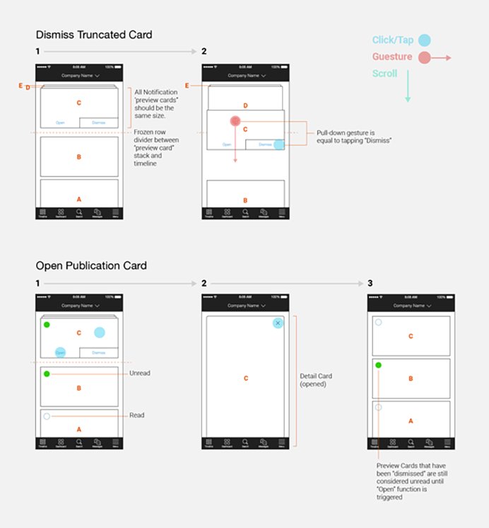

Employees often feel disconnected and unable to utilize their benefits and services. The idea of searching for answers about their medical coverage, company policy or merely requesting vacation days is sometimes daunting. HR professionals often feel disconnected from the real needs of employees. According to a Gallup poll, unhappy workers cost the United States $450 billion to $550 billion a year.
MY ROLE
I was the Senior Product Designer and lead designing the employee web app, employer web app and employee Android and iOS apps. I worked closely with the Systems Architect, Front-End Engineer and managed the UI Engineer. I also worked hand-in-hand with the Head of Product on feature design and leading design research and testing.
THE CHALLENGE
Make HR Communication Valuable
Build a one-stop-shop solution that aggregates benefit information and provides instant responses to employee queries while improving communication between the employee and the company.
KICKOFF
At the outset of the project, understanding all of the potential employee questions was an enormous task. I partnered with our HR thought leader to explore the everyday situations in which an employee would ask a question about their healthcare benefits. We started out by interviewing HR professionals and employees in the hopes of understanding how they engage with employees and how they spend and allocate their time.
Based on our research employees said:
1. I would engage in a mobile experience if it’s not too difficult to set-up
2. I do not want to feel obligated to use the app itself as a part of my everyday workload
3. I would use the app if I could easily find answers to their questions about my benefits
EARLY INSIGHTS
I also organized a "task mapping" exercise to discover what tasks an HR professional would need to complete. We grouped and organized the brainstormed tasks around the idea of “push” communications. This became the methodology for driving AI learning when questions were not being asked.
DISCOVERY
Stop Sounding the Horn
The reaction rate is the percentage of users who received push notifications and then tapped on them. In a nationwide poll, office notifications have a reaction rate of 43%. That is 18% higher than consumer goods apps. The number was still low, but when the notification was personalized to the employee, the reaction rate rose another 36%.
"23 out of 25 HR professionals said that repetitive task-oriented questions accounted for 40% or more of their daily workload."
We found that employees valued discovering immediate information. According to a poll, 18% of employees were more likely to read company news, and 82% of employees were more likely to read timely information about their benefits.
We also found that HR professionals spend a majority of their time answering repetitive questions or writing detailed emails to employees about their individual benefits. 23 out of 25 HR professionals said that repetitive task-oriented questions accounted for 40% or more of their daily workload.
APPROACH
Relevant and Compliant
Employers still needed a useful tool to communicate news, events, and policy but in a way that would strike a balance with what employees value without creating another HR bullhorn like email blast campaigns that had been ignored in the past.
DESIGN
Striking a Balance: Push vs. Pull
Data shows up to 60% of users opt-out of push notifications. Silicon Valley investor Andrew Chen in his blog discusses notifications and the delicate relationship with the user, “Once your users begin receiving push notifications, it is critical that you respect this incredibly personal communication channel. By only sending hyper-targeted, personalized push messages that actually add value, you can ensure that your users don’t later opt-out of push…”
The design approach was to mix personalized benefit updates – alerts about your medical deductible, a notification telling you that your payroll was processed – with company published push notifications around policy, news or compliance deadlines.

By building metrics into an interaction model, employees could feel in-control by quickly dismissing notifications directly in the timeline. The gesture pattern design also considered the recording of “read” actions and “dismissed” actions which lead to the first set of analytics. With these primary metrics, we were able to begin building-in tips and best practices to help guide employer publishing.
DESIGN
Personal Information from a Impersonal Bot
Employers still needed a useful tool to communicate news, events, and policy but in a way that would strike a balance with what employees value without creating another HR bullhorn like email blast campaigns that had been ignored in the past.
Designing the chatbot logic and understanding each decision along the employee’s "path to an answer" was easy enough although we didn’t have a database full of all the potential answers. We only had a set of 1:1 questions and answers.
Work began with the AI team and our data scientist, we decided to track the interactions to help train the engine. Although it became apparent that this would take time and the feature needed to be ready for the next release cycle.
I decided to design the chatbot right away. The challenge was now to create a chatbot that mimics basic logic before the framework was engineered. This way when the logic was applied behind-the-scenes, users would already be accustomed to the UX.
The initial version displayed a series of well-timed ellipses animations to mimic “system processing time.” This gave the employee the feeling that the system was thinking about their question. By following-up with "related results" and providing potential topics to choose from, the employee’s actions helped train the AI engine.
IMPACT
Opt-out rates for news and event publications dropped 32% with new employee users
Enterprise sales increased 460% in 1.5 years
Employees were satisfied with the answers they found 96.4% of the time